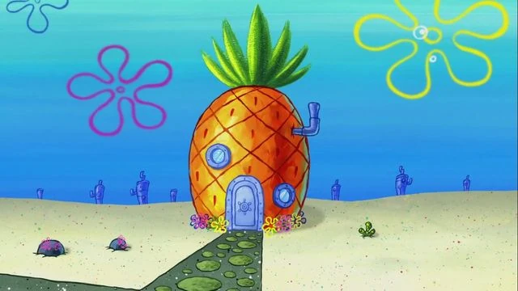
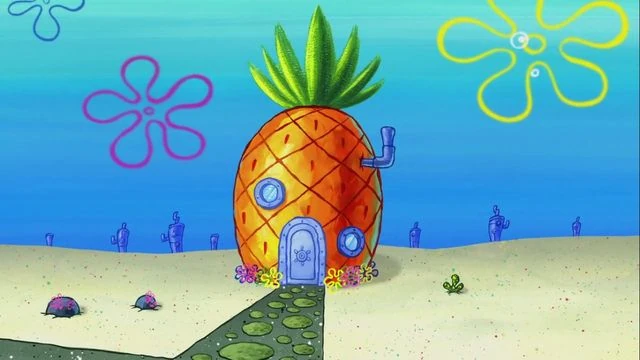
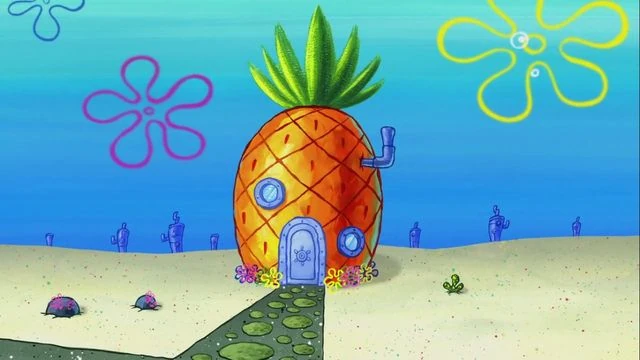

Hello there! Welcome to my my website! I am Spongebob Squarepants and I will be sharing my life with you through my blog. I recently started learning how to code and want to apply the knowledge that I learnt into this blog. I am currently learning how to use html and css to create this website. I hope in the future I can learn new programming languages such as javascript and java. I also love my supporters and would love to feel more connected with them. If you would like to learn more about me, click the buttons above which direct you to a preview of who I am, some of my socials, me speaking in another language (can you guess which one üòÅ), all about my restraunt, and how to make my favourite meal of all times.

This photo has great meaning to me. It was the first perfect krabby patty I have ever made. It was during my first year of working in the Krusty Krab. I had been training with Mr.Krabbs for a few months and was finally able to master it! The assemlbing part of the burger took time but this was the first time I was able to perfect it. First I placed the patty, cheese, pickles, onions, tomatoes, lettuce, and finally the sesame burger bun on top!!!Now after working there for more than 20 years, I can finally say I effortlessly create hundreds of perfect krabby patties per day.
This day was truly the best day EVERRRRRRR. I hung out with my best best besttt friends patrick, squidward, sandy, and Gary. We all went together to do my favourite activity of all time...PLAYING WITH JELLYFISH ‚ú©ü™ºü´ßüêöìáº!!! We were able to catch many jelly fish but only one stayed with us. I can't wait for us to do it again this Sunday so we can have another best day EVERRRRRR.
Here is a photo of my lovely home. Oh boy, how I love it so much. I moved to my beautful pineapple 20 years ago and have been living there ever since. So many great memories created here. I was able to make it all nice and homey by adding rocks on the path, decoration in the inside, and paintings. It would lovely for you all to join me someday. The best part of my house is my neighours.... PATRICK AND SQUIDWARDDDDDD. Oh how I love to visit them all the time üòÅüòÅ.